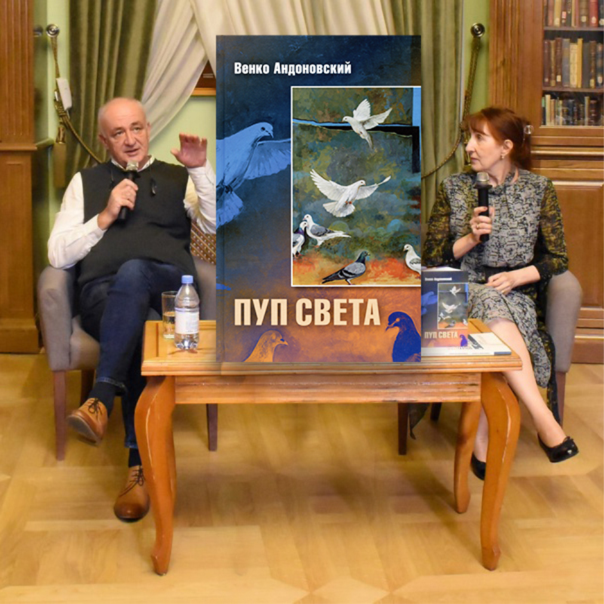
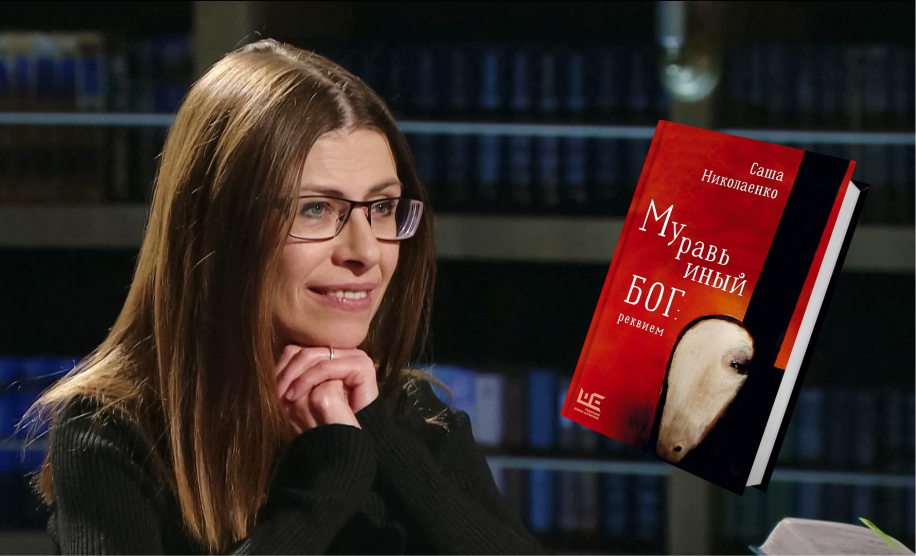
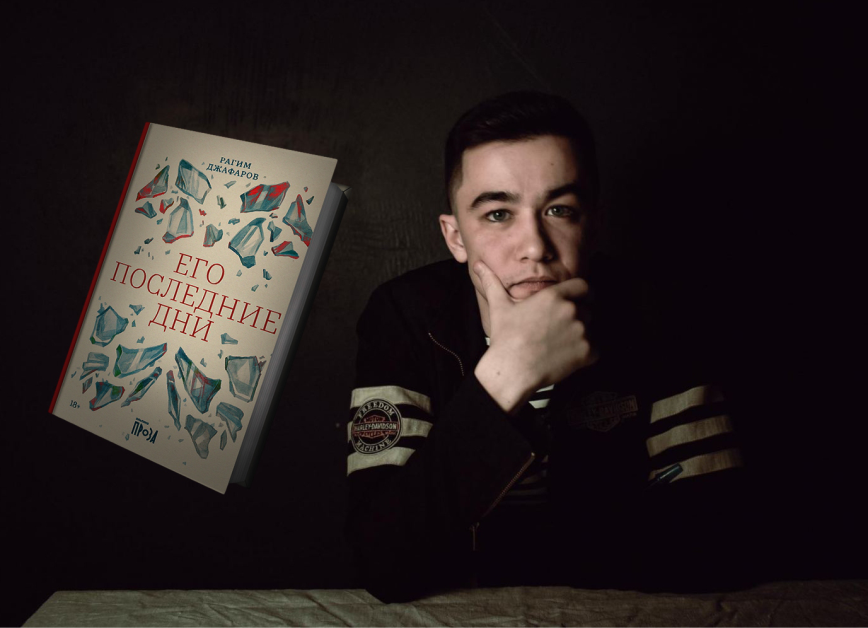

«Ясная Поляна» - крупнейшая ежегодная литературная награда России. Всего финалистов в 2023 году было шестеро. Рецензии на их книги писали участники Яснополянской школы критики им. Валентина Курбатова, а публиковались они на портале ГодЛитературы.РФ.
В номинации «Современная русская проза» награда вручена Александре Николаенко за роман «Муравьиный бог: реквием». Главный герой романа, мальчик Петя, после смерти родителей живет с бабушкой и дедом, давно именуемым покойником. Данила Алексеич - живые мощи: кроме стука кулаком, он ничем не может возразить жене. Да вряд ли мог и раньше: баба Вера - виртуоз домашней тирании. Поскольку беседы с мужем, разбитым параличом, не так увлекательны, весь ушат ее непереваренной любви выливается на внука.
Приз «Выбор читателей» достался книге Рагима Джафарова «Его последние дни». Роман о писателе, природе творчества и границах психической нормы. Книга рассказывает о том, как шатко человеческое понимание окружающей реальности и собственного сознания.
Премию в номинации «Иностранная литература» вручили северомакедонскому писателю Венко Андоновскому и переводчице его романа «Пуп Света» Ольге Панкиной. В произведении рассматриваются вечные вопросы: что есть истина, Бог, любовь? В чём смысл жизни и где начало начал, «Пуп света»? Две части романа разделены дистанцией в тысячу лет, в каждой из них своя атмосфера, стилистика, язык.


